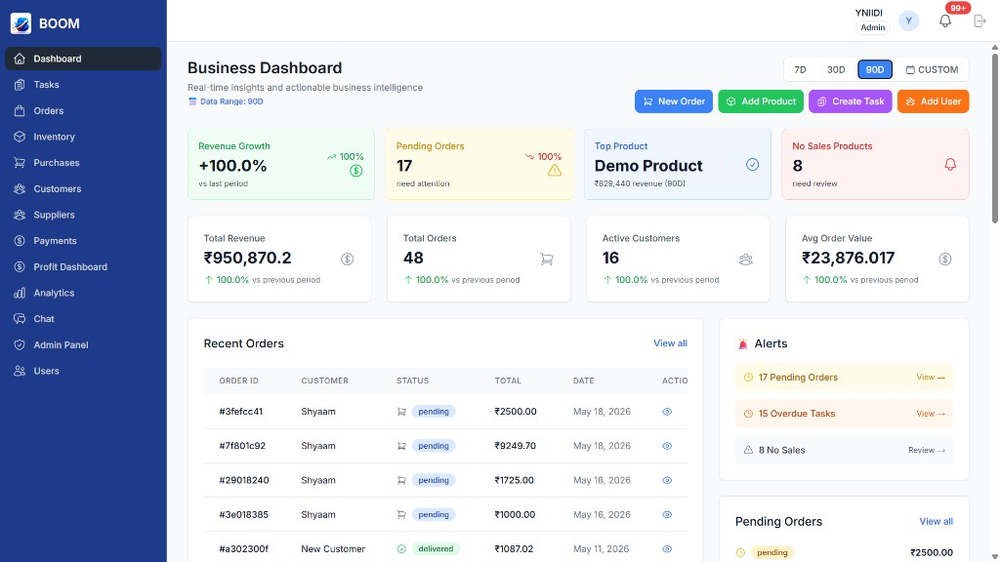

Simplicity
Reduce complexity without sacrificing capability.
Product Ecosystem
YNIIDI develops software products, intelligent platforms, and business technologies designed to help organizations simplify operations, connect systems, unlock insights, and accelerate growth.
Every product within the YNIIDI ecosystem is built around a shared mission: Transforming complexity into clarity through technology.
Most software products solve isolated problems.
At YNIIDI, we believe technology creates the greatest value when systems work together.
That's why we're building a connected ecosystem of business technologies designed to support organizations across operations, intelligence, automation, and decision-making.
Every YNIIDI product is designed to:
Technology should not force organizations to juggle disconnected systems. It should create a unified environment where information flows freely, teams collaborate effectively, and leaders make decisions with confidence. The YNIIDI ecosystem is built around five core principles:
Reduce complexity without sacrificing capability.
Turn data into actionable insights.
Create seamless experiences across systems and workflows.
Support organizations through every stage of growth.
Continuously evolve alongside changing business needs.
Business Operations Platform

BOOM is a comprehensive business operations platform designed to centralize and streamline operational workflows.
By connecting inventory management, order processing, purchasing, supplier relationships, customer management, billing, payments, and task coordination, BOOM helps organizations operate with greater visibility and control.
Additional software products are currently under development as part of the YNIIDI ecosystem.
BOOM is the foundation of the YNIIDI product ecosystem today. As we continue building, new software products will be added to help organizations operate with greater connectivity, intelligence, and scale.
We're building toward a connected ecosystem of business technologies — starting with BOOM, with more products on the way.
The YNIIDI ecosystem will continue expanding to address new business challenges and emerging technological opportunities. Future areas of exploration include:
Reducing repetitive manual work.
Turning operational data into competitive advantage.
Improving decision-making through intelligent systems.
Technology tailored to unique industry requirements.
Helping teams work more effectively and collaboratively.
Accelerating modernization across organizations.
We don't build products for the sake of technology. We build products to solve real operational challenges. Every YNIIDI product is guided by a commitment to:
Helping organizations improve efficiency and visibility.
Delivering technologies that grow alongside the organizations that use them.
Developing products based on practical business needs.
Preparing organizations for tomorrow's opportunities.
The future of business belongs to organizations that can connect operations, leverage intelligence, and adapt to change.
YNIIDI is building the technologies that make that future possible.
Whether you're exploring operational software today or preparing for the intelligent systems of tomorrow, our ecosystem is designed to support your journey.